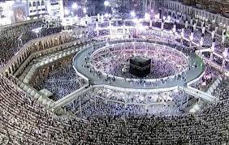
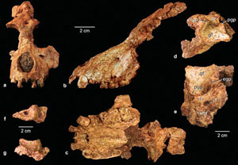

La Mecque
Lieu de naissance, selon la tradition islamique, du prophète de l'islam Mahomet à la fin du vie siècle[2], elle abrite la Kaaba au cœur de la mosquée Masjid Al-Haram (« La Mosquée sacrée ») et la tradition musulmane a lié sa fondation à Ibrahim (Abraham), ce qui en fait la ville sainte la plus sacrée de l'islam. L'accès est interdit aux personnes qui ne sont pas de confession musulmane ainsi qu'aux femmes seules, même musulmanes[3].
En 2009 une importante découverte paléontologique a lieu près de la Mecque, le paléontologue Iyad Zalmout[37], université du Michigan aux États-Unis, qui était à la recherche de fossiles de baleines et de dinosaures, a découvert un crâne fossilisé datant de 29 à 28 millions d’années, qui correspond à l'espèce Saadanius hijazensis[38], un primate catarrhinien apparenté à l’ancêtre commun des Grands Singes (dont l'Homme) et des Cercopithèques. Les chercheurs vont accentuer les recherches dans cette région d'Asie et particulièrement dans les strates géologiques de cette période.

Le hajj
Le hajj (arabe : ḥajj, حَجّ, avec un /a/ bref ; ou ḥijjaʰ, حِجّة, « (aller vers) pèlerinage ») est le pèlerinage que font les musulmans aux lieux saints de la ville de La Mecque, en Arabie saoudite. C’est entre les 8 et 13 du mois lunaire de Dhou al-hijja (ḏū al-ḥijja, ذو الحجة, celui du pèlerinage), douzième mois de l'année musulmane, qu’a lieu le grand pèlerinage à La Mecque, qui constitue le cinquième pilier de l’islam.